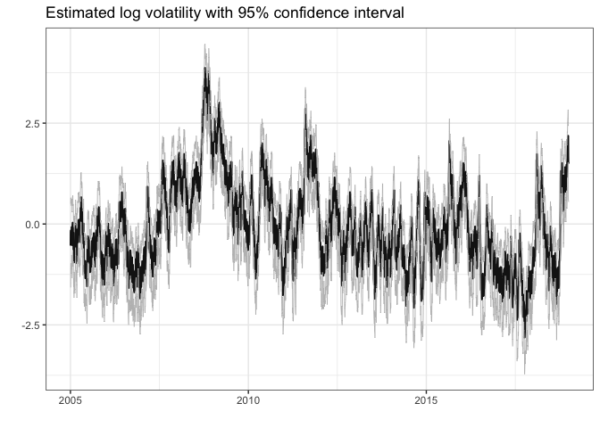
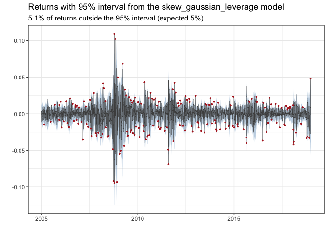
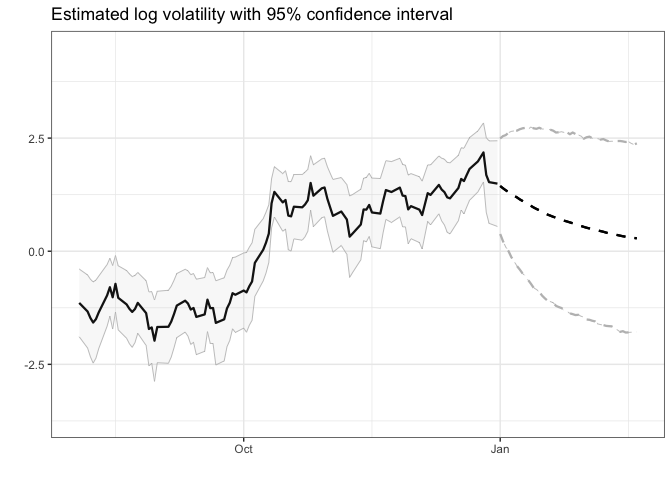
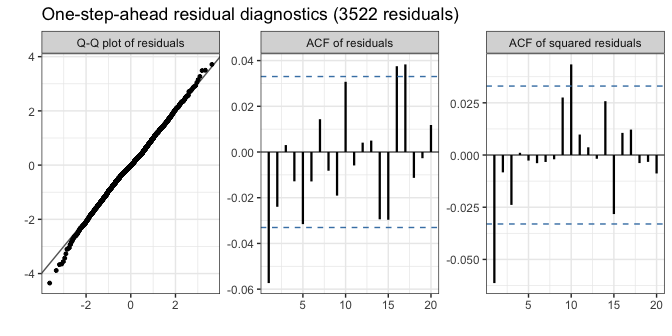

stochvolTMB is a package for fitting stochastic volatility (SV) models to time series data. It is inspired by the package stochvol, but parameter estimates are obtained through optimization and not MCMC, leading to significant speed up. It is built on Template Model Builder for fast and efficient estimation. The latent volatility is integrated out of the likelihood using the Laplace approximation and automatic differentiation (AD) is used for accurate evaluation of derivatives.
Five models for the observational error are implemented. Select a model with the model argument of estimate_parameters:
-
Gaussian (
"gaussian") - The classic SV model with Gaussian noise -
t (
"t") - t-distributed noise for heavy tail returns -
Leverage (
"leverage") - Extending the Gaussian model by allowing observed returns to be correlated with the latent volatility -
Skew-Gaussian (
"skew_gaussian") - Skew-Gaussian distributed noise for asymmetric returns -
Skew-Gaussian with leverage (
"skew_gaussian_leverage") - Combines asymmetric returns with the leverage effect
Installation
To install the current stable release from CRAN, use
install.packages("stochvolTMB")To install the current development version, use
# install.packages("remotes")
remotes::install_github("JensWahl/stochvolTMB")If you would also like to build and view the vignette locally, use
remotes::install_github("JensWahl/stochvolTMB", dependencies = TRUE, build_vignettes = TRUE)Example
The main function for estimating parameters is estimate_parameters:
library(stochvolTMB, warn.conflicts = FALSE)
# load s&p500 data from 2005 to 2018
data(spy)
# find the best model using AIC
gaussian <- estimate_parameters(spy$log_return, model = "gaussian", silent = TRUE)
t_dist <- estimate_parameters(spy$log_return, model = "t", silent = TRUE)
skew_gaussian <- estimate_parameters(spy$log_return, model = "skew_gaussian", silent = TRUE)
leverage <- estimate_parameters(spy$log_return, model = "leverage", silent = TRUE)
skew_gaussian_leverage <- estimate_parameters(spy$log_return, model = "skew_gaussian_leverage", silent = TRUE)
# the models with leverage stand out with an AIC far below the other models
AIC(gaussian, t_dist, skew_gaussian, leverage, skew_gaussian_leverage)
#> df AIC
#> gaussian 3 -23430.57
#> t_dist 4 -23451.69
#> skew_gaussian 4 -23440.72
#> leverage 4 -23608.85
#> skew_gaussian_leverage 5 -23698.59
# the skew models report the skewness and the shape parameter alpha
summary(skew_gaussian_leverage, report = "transformed")
#> parameter estimate std_error z_value p_value type
#> <char> <num> <num> <num> <num> <char>
#> 1: sigma_y 0.007951179 0.0003805306 20.89498 5.947836e-97 transformed
#> 2: sigma_h 0.276811723 0.0178393401 15.51693 2.665157e-54 transformed
#> 3: phi 0.971016373 0.0038900969 249.61239 0.000000e+00 transformed
#> 4: skewness -0.404691012 0.0391237331 -10.34388 4.461243e-25 transformed
#> 5: alpha -1.829728812 0.1306960189 -13.99988 1.561303e-44 transformed
#> 6: rho -0.837199927 0.0226024967 -37.04015 2.587145e-300 transformed
# get parameter estimates with standard error
estimates <- summary(leverage)
head(estimates, 10)
#> parameter estimate std_error z_value p_value type
#> <char> <num> <num> <num> <num> <char>
#> 1: sigma_y 0.008338412 0.0004163314 20.0283029 3.121144e-89 transformed
#> 2: sigma_h 0.273443559 0.0182641070 14.9716359 1.125191e-50 transformed
#> 3: phi 0.967721215 0.0043681868 221.5384240 0.000000e+00 transformed
#> 4: rho -0.748695259 0.0322487815 -23.2162340 3.121690e-119 transformed
#> 5: log_sigma_y -4.786882463 0.0499293427 -95.8731319 0.000000e+00 fixed
#> 6: log_sigma_h -1.296660043 0.0667929683 -19.4131220 5.978190e-84 fixed
#> 7: logit_phi 4.110221202 0.1375467861 29.8823500 3.337032e-196 fixed
#> 8: logit_rho -1.939958912 0.1467670249 -13.2179481 6.912403e-40 fixed
#> 9: h -0.536254072 0.5182192669 -1.0348015 3.007616e-01 random
#> 10: h -0.207811236 0.4245258952 -0.4895137 6.244781e-01 random
# plot estimated volatility with 95 % confidence interval
plot(leverage, include_ci = TRUE, dates = spy$date)
# plot the returns with the 95 % interval of the fitted model
plot_returns(skew_gaussian_leverage, dates = spy$date)
Given the estimated parameters we can simulate future volatility and log-returns using predict.
set.seed(123)
# simulate future prices with or without parameter uncertainty
pred = predict(leverage, steps = 10)
# Calculate the mean, 2.5% and 97.5% quantiles from the simulations
pred_summary = summary(pred, quantiles = c(0.025, 0.975), predict_mean = TRUE)
print(pred_summary)
#> $y
#> time quantile_0.025 quantile_0.975 mean
#> <int> <num> <num> <num>
#> 1: 1 -0.03787452 0.03639606 -2.352005e-04
#> 2: 2 -0.03750167 0.03718038 7.938422e-05
#> 3: 3 -0.03759011 0.03677040 -6.930858e-05
#> 4: 4 -0.03667977 0.03841486 2.810659e-04
#> 5: 5 -0.03674431 0.03679402 -1.421016e-04
#> 6: 6 -0.03531571 0.03708404 2.750826e-04
#> 7: 7 -0.03706161 0.03531337 -9.648350e-05
#> 8: 8 -0.03654679 0.03581507 -9.638224e-05
#> 9: 9 -0.03558469 0.03600052 -7.431832e-05
#> 10: 10 -0.03551163 0.03483791 -3.915279e-04
#>
#> $h
#> time quantile_0.025 quantile_0.975 mean
#> <int> <num> <num> <num>
#> 1: 1 0.41447216 2.519873 1.455147
#> 2: 2 0.27225022 2.568749 1.408390
#> 3: 3 0.10808006 2.612277 1.363972
#> 4: 4 0.01248118 2.639010 1.322519
#> 5: 5 -0.12153490 2.658716 1.276073
#> 6: 6 -0.20817536 2.688433 1.239662
#> 7: 7 -0.28558724 2.696168 1.199534
#> 8: 8 -0.37711849 2.699062 1.160366
#> 9: 9 -0.46776638 2.718274 1.124317
#> 10: 10 -0.55249774 2.705546 1.086525
#>
#> $h_exp
#> time quantile_0.025 quantile_0.975 mean
#> <int> <num> <num> <num>
#> 1: 1 0.010125271 0.02945742 0.01790539
#> 2: 2 0.009421133 0.03039987 0.01765869
#> 3: 3 0.008772480 0.03099832 0.01736513
#> 4: 4 0.008319762 0.03130376 0.01715038
#> 5: 5 0.007848844 0.03163646 0.01677779
#> 6: 6 0.007459083 0.03191093 0.01657714
#> 7: 7 0.007125009 0.03202311 0.01631264
#> 8: 8 0.006833992 0.03228772 0.01612161
#> 9: 9 0.006592298 0.03264210 0.01588995
#> 10: 10 0.006231481 0.03240400 0.01567428
# plot predicted volatility with 0.025 and 0.975 quantiles
plot(leverage, include_ci = TRUE, forecast = 50, dates = spy$d) +
ggplot2::xlim(c(spy[.N, date] - 150, spy[.N, date] + 50))
#> Warning: Removed 3419 rows containing missing values or values outside the scale range
#> (`geom_line()`).
#> Removed 3419 rows containing missing values or values outside the scale range
#> (`geom_line()`).
#> Removed 3419 rows containing missing values or values outside the scale range
#> (`geom_line()`).
#> Warning: Removed 3419 rows containing missing values or values outside the scale range
#> (`geom_ribbon()`).
To check the fit with one-step-ahead residuals, use plot_diagnostics. It shows a Q-Q plot and the autocorrelation of the residuals and of the squared residuals:
plot_diagnostics(skew_gaussian_leverage)